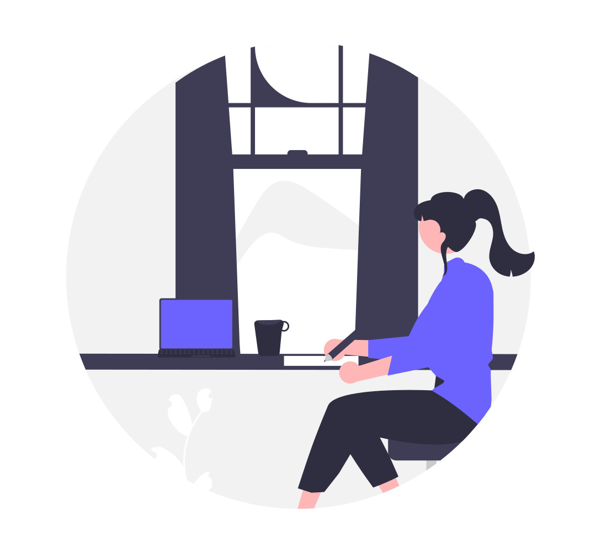

Attending University
September 29, 2022 by Danielle Blair
 I am currently a second year Student at the University of the West Indies. First year was fine, I had my classes online and I had more time do complete my assignments. Due to the world getting back to normal, I now have face to face classes that I do not enjoy. Second year is more challenging. I spend long hours away from home and I no longer have as much time to study and do my work.
However, I am trying to make the most. I have joined clubs and have had conversations with my classmates. I am currently trying to make friends with those I can, and overall meet new people and network.